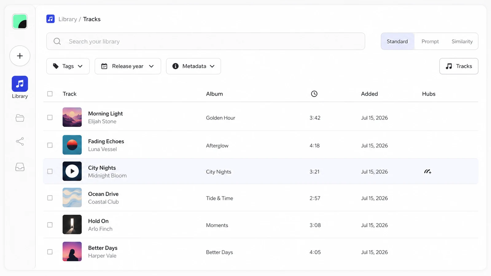
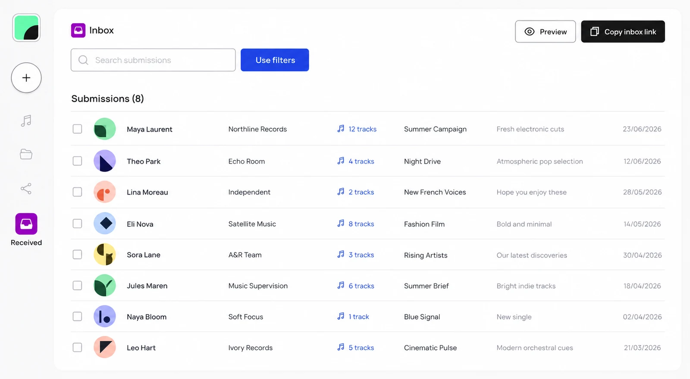
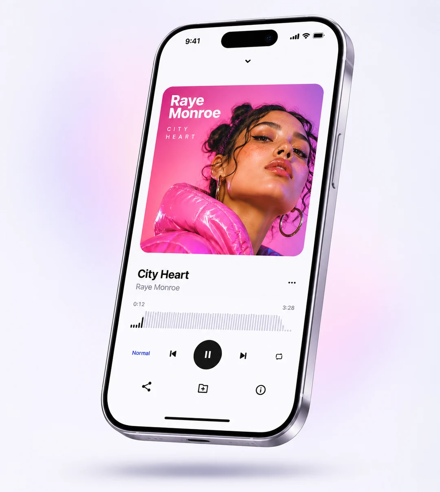
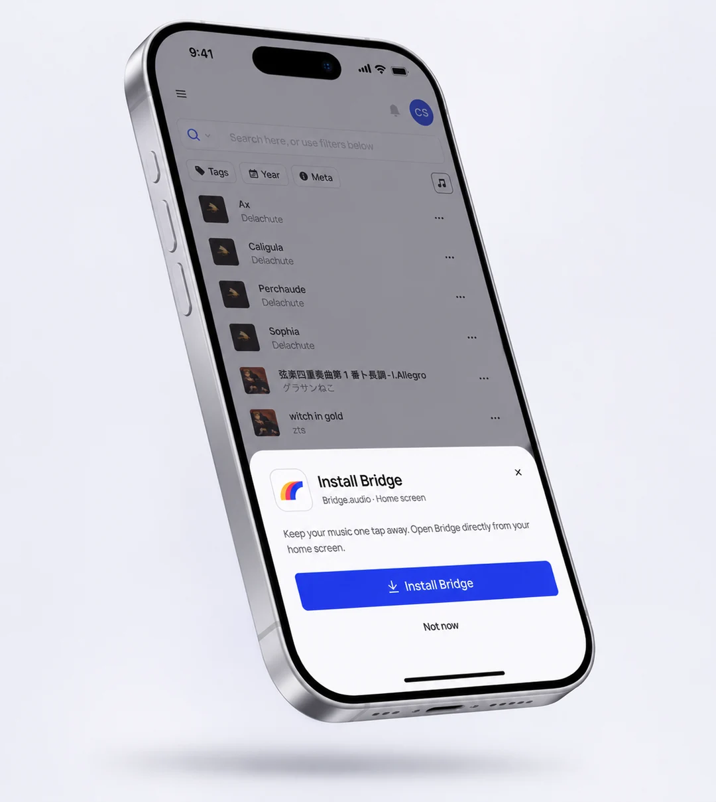

01 / 04 · RECEIVE
Every demo in one place.
Collect incoming music in an organized Inbox. Keep your files and context together instead of chasing links.
SoundCloud: private links and messages. Bridge: a dedicated reception workflow.
SoundCloud connects music with fans. Bridge connects music professionals: receive demos, organize catalogs, find the right track, share it with teams and reach industry buyers.
Not an either-or choice: you can keep SoundCloud for your audience and use Bridge for your professional workflow.

Both can share audio. The important difference is what happens before and after you press Share.
| What you need | SoundCloud | Bridge.audio |
|---|---|---|
| Reach listeners and build a fanbase | Core strength: profiles, follows and public discovery | Not its primary purpose |
| Release to DSPs and monetize | Available on eligible creator plans | Not a music distributor |
| Receive demos in one place | Private links and messages, no dedicated Inbox workflow | Smart Inbox to collect submissions |
| Manage masters, metadata and team work | Track uploads, descriptions and playlists | Private library, metadata, projects and assets |
| Find music using AI | Public search and music recommendations | Auto-tags, filters, Prompt and Similarity Search* |
| Pitch music professionally | Private tracks and playlist links | Project links, assets and paid-plan tracking |
| Reach industry buyers | Primarily listeners, fans and creators | Optional Discovery Hubs for eligible tracks |
* Advanced AI search features depend on plan. Professional Hub publication is optional and subject to eligibility. SoundCloud's public music discovery is not the same as searching a private professional catalog.
Four things you already do, brought together. Scroll to see the actual Bridge interface at each step.
Collect incoming music in an organized Inbox. Keep your files and context together instead of chasing links.
SoundCloud: private links and messages. Bridge: a dedicated reception workflow.
Keep your metadata together and let AI auto-tagging describe musical characteristics. Less manual work, a catalog that's easier to use.
Genre, mood, instruments and more, ready for smarter searches.
Use filters, natural-language Prompt Search or Similarity Search, then share a professional Project with music and relevant assets.
Advanced search and detailed share analytics depend on your plan.
Choose to make eligible tracks discoverable through professional Hubs, beyond the people you already know.
Shown: a buyer on Bridge Sync contacting a track’s rights holder directly. Publication is optional, with eligibility and plan conditions.

The steps illustrate capabilities, not a one-click automated workflow. Search and Hub availability depend on your plan and eligibility.
Your private base for music, metadata, submissions, projects and teamwork. Everything ready when you need it.
Explore Workspaces ↗When you choose and qualify, make selected music searchable by professionals looking for tracks for creative projects.
Explore Discovery Hubs ↗Listen on mobile and access Bridge from your home screen. SoundCloud also has native apps; Bridge's mobile experience focuses on your professional catalog and player.
On iPhone, adding Bridge to the Home Screen uses Safari's normal steps, not a native one-click install.


Both offer a free starting point. Compare what each plan lets you do, not just the price.
Basic Free: a public creator account with a 2-hour upload allowance. Paid Artist plans add upload time, distribution and monetization tools.
View SoundCloud plans ↗Free: up to 50 tracks, 3 seats, an Inbox, basic sharing and AI auto-tagging. Talent Pro from €5/month adds 250 tracks, 5 seats and Smart Search.
View Bridge plans ↗Free limits use different units (tracks versus upload time), so these offers are not directly equivalent. Check official pricing for the latest terms and conditions.
The important questions, without the jargon.
Yes, if you use SoundCloud to privately share tracks or manage professional music workflows. Bridge adds a dedicated Workspace, structured metadata, an Inbox, AI-assisted search, professional pitches and optional industry discovery. SoundCloud remains stronger for public listeners, fans and artist distribution.
You can. SoundCloud can serve your public releases and fan community, while Bridge handles private catalog work, demos, pitches and eligible discovery among music professionals.
Search by artist, title, metadata and tags; use AI-generated tags to describe the music; or use Prompt Search and Similarity Search on eligible paid plans. These tools help you find tracks in your working catalog.
Yes. Bridge offers a Smart Inbox to receive submissions and project links for controlled professional sharing. SoundCloud also supports private track and playlist links, but not an equivalent dedicated Workspace workflow.
Potentially. Selected eligible music can be published to specialized Discovery Hubs, including Bridge Sync, Bridge Library and Bridge Score. Publication is optional and depends on the relevant Hub, plan and eligibility.
Bridge has a mobile-friendly web experience that can be added to the home screen using your browser. On iPhone, installation follows the Safari Add to Home Screen process; it is not the same as a one-tap native App Store installation.
Use SoundCloud for your audience and Bridge for the professional work around your music: sharing, pitching and discovery.
Public information checked 23 November 2026. Advanced Bridge search features depend on the plan; Discovery Hub publication is optional and subject to eligibility. Free plans use different units (tracks versus upload time), so they are not directly equivalent. Product visuals are Bridge interfaces.